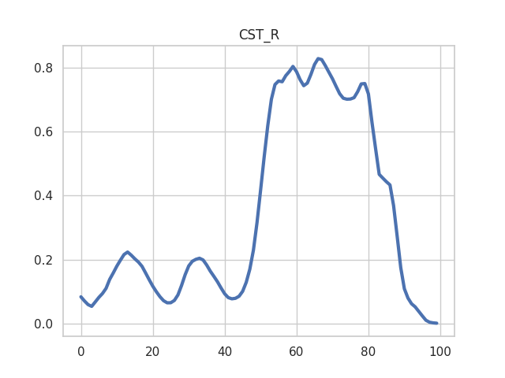
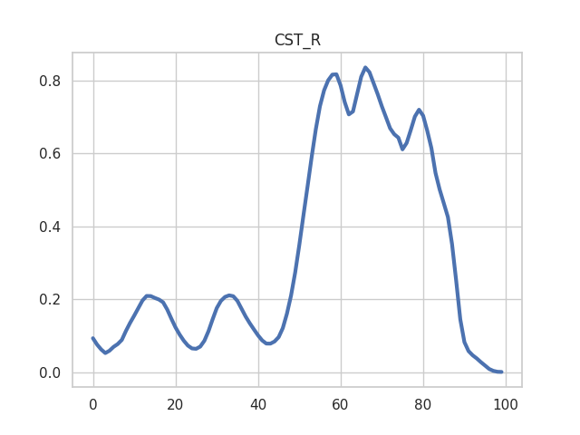
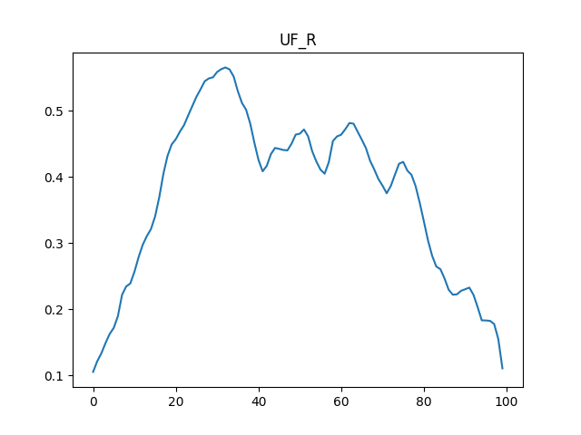
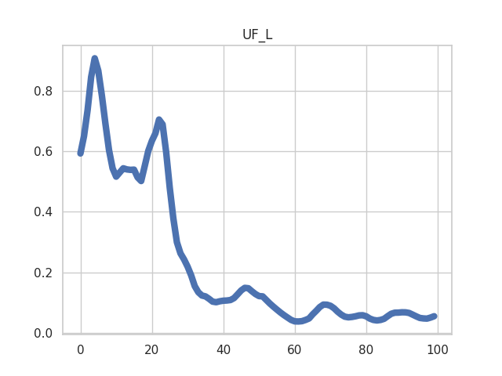
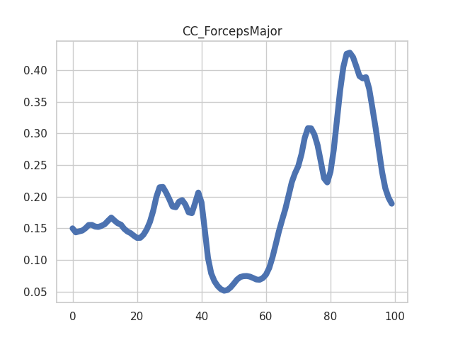
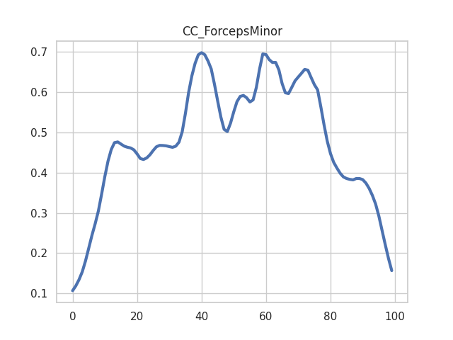
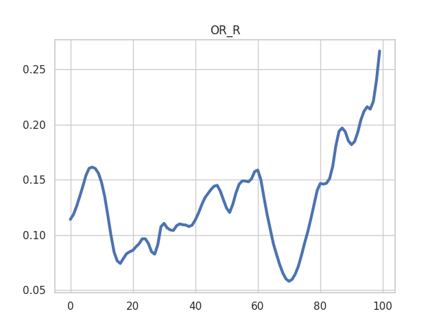
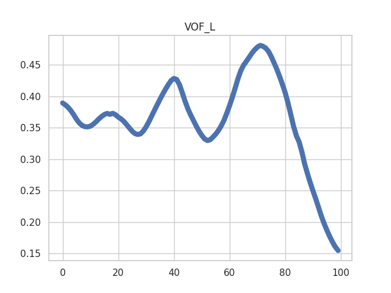

Note
Click here to download the full example code
Plotting tract profiles using RecoBundles¶
An example of tracking and segmenting two tracts with RecoBundles [Garyfallidis2017], and plotting their tract profiles for FA (calculated with DTI).
See plot_tract_profile for explanations of each stage here. The main difference here is that segmentation uses the RecoBundles algorithm, instead of the AFQ waypoint ROI approach.
import os.path as op
import matplotlib.pyplot as plt
import numpy as np
import nibabel as nib
import dipy.data as dpd
from dipy.data import fetcher
import dipy.tracking.utils as dtu
import dipy.tracking.streamline as dts
from dipy.io.streamline import save_tractogram, load_tractogram
from dipy.stats.analysis import afq_profile, gaussian_weights
from dipy.io.stateful_tractogram import StatefulTractogram
from dipy.io.stateful_tractogram import Space
from dipy.align import affine_registration
import AFQ.data as afd
import AFQ.tractography as aft
import AFQ.registration as reg
import AFQ.models.dti as dti
import AFQ.segmentation as seg
import AFQ.api as api
# Target directory for this example's output files
working_dir = "./recobundles"
dpd.fetch_stanford_hardi()
hardi_dir = op.join(fetcher.dipy_home, "stanford_hardi")
hardi_fdata = op.join(hardi_dir, "HARDI150.nii.gz")
hardi_fbval = op.join(hardi_dir, "HARDI150.bval")
hardi_fbvec = op.join(hardi_dir, "HARDI150.bvec")
img = nib.load(hardi_fdata)
print("Calculating DTI...")
if not op.exists(op.join(working_dir, 'dti_FA.nii.gz')):
dti_params = dti.fit_dti(hardi_fdata, hardi_fbval, hardi_fbvec,
out_dir=working_dir)
else:
dti_params = {'FA': op.join(working_dir, 'dti_FA.nii.gz'),
'params': op.join(working_dir, 'dti_params.nii.gz')}
FA_img = nib.load(dti_params['FA'])
FA_data = FA_img.get_fdata()
print("Registering to template...")
MNI_T2_img = afd.read_mni_template()
if not op.exists(op.join(working_dir, 'mapping.nii.gz')):
import dipy.core.gradients as dpg
gtab = dpg.gradient_table(hardi_fbval, hardi_fbvec)
b0 = np.mean(img.get_fdata()[..., gtab.b0s_mask], -1)
# Prealign using affine registration
_, prealign = affine_registration(
b0,
MNI_T2_img.get_fdata(),
img.affine,
MNI_T2_img.affine)
# Then register using a non-linear registration using the affine for
# prealignment
warped_hardi, mapping = reg.syn_register_dwi(hardi_fdata, gtab,
prealign=prealign)
reg.write_mapping(mapping, op.join(working_dir, 'mapping.nii.gz'))
else:
mapping = reg.read_mapping(op.join(working_dir, 'mapping.nii.gz'),
img, MNI_T2_img)
bundle_names = ["CST", "UF", "CC_ForcepsMajor", "CC_ForcepsMinor", "OR", "VOF"]
bundles = api.BundleDict(bundle_names, seg_algo="reco80")
print("Tracking...")
if not op.exists(op.join(working_dir, 'dti_streamlines_reco.trk')):
seed_roi = np.zeros(img.shape[:-1])
for bundle in bundles:
if bundle != 'whole_brain':
sl_xform = dts.Streamlines(
dtu.transform_tracking_output(bundles[bundle]['sl'],
MNI_T2_img.affine))
delta = dts.values_from_volume(mapping.backward,
sl_xform, np.eye(4))
sl_xform = [sum(d, s) for d, s in zip(delta, sl_xform)]
sl_xform = dts.Streamlines(
dtu.transform_tracking_output(
sl_xform,
np.linalg.inv(MNI_T2_img.affine)))
sft = StatefulTractogram(sl_xform, img, Space.RASMM)
save_tractogram(sft, op.join(working_dir, f'{bundle}_atlas.trk'))
sl_xform = dts.Streamlines(
dtu.transform_tracking_output(
sl_xform,
np.linalg.inv(img.affine)))
for sl in sl_xform:
sl_as_idx = sl.astype(int)
seed_roi[sl_as_idx[:, 0],
sl_as_idx[:, 1],
sl_as_idx[:, 2]] = 1
nib.save(nib.Nifti1Image(seed_roi, img.affine),
op.join(working_dir, 'seed_roi.nii.gz'))
sft = aft.track(dti_params['params'], seed_mask=seed_roi,
directions='det', stop_mask=FA_data,
stop_threshold=0.1)
print(len(sft.streamlines))
save_tractogram(sft, op.join(working_dir, 'dti_streamlines_reco.trk'),
bbox_valid_check=False)
else:
sft = load_tractogram(op.join(working_dir, 'dti_streamlines_reco.trk'),
img)
print("Segmenting fiber groups...")
segmentation = seg.Segmentation(seg_algo='reco80',
rng=np.random.RandomState(2))
segmentation.segment(bundles,
sft,
fdata=hardi_fdata,
fbval=hardi_fbval,
fbvec=hardi_fbvec,
mapping=mapping,
reg_template=MNI_T2_img)
fiber_groups = segmentation.fiber_groups
for kk in fiber_groups:
print(kk, len(fiber_groups[kk]))
sft = StatefulTractogram(fiber_groups[kk].streamlines,
img,
Space.RASMM)
save_tractogram(sft, op.join(working_dir, '%s_reco.trk' % kk),
bbox_valid_check=False)
print("Extracting tract profiles...")
for bundle in bundles:
if bundle != 'whole_brain':
fig, ax = plt.subplots(1)
sft = load_tractogram(
op.join(working_dir, f'{bundle}_reco.trk'),
img,
to_space=Space.VOX,
bbox_valid_check=False)
weights = gaussian_weights(sft.streamlines)
profile = afq_profile(FA_data, sft.streamlines,
np.eye(4), weights=weights)
ax.plot(profile)
ax.set_title(bundle)
plt.show()
- 
- 
- 
- 
- 
- 

- 

- 
Out:
Calculating DTI...
Registering to template...
Optimizing level 2 [max iter: 10000]
Optimizing level 1 [max iter: 1000]
Optimizing level 0 [max iter: 100]
Optimizing level 2 [max iter: 10000]
Optimizing level 1 [max iter: 1000]
Optimizing level 0 [max iter: 100]
Optimizing level 2 [max iter: 10000]
Optimizing level 1 [max iter: 1000]
Optimizing level 0 [max iter: 100]
Tracking...
16638
Segmenting fiber groups...
CST_R 70
CST_L 60
UF_R 52
UF_L 49
CC_ForcepsMajor 370
CC_ForcepsMinor 990
OR_R 18
OR_L 42
VOF_R 96
VOF_L 134
Extracting tract profiles...
References:¶
- Garyfallidis2017
Garyfallidis, Eleftherios, Marc-Alexandre Côté, Francois Rheault, Jasmeen Sidhu, Janice Hau, Laurent Petit, David Fortin, Stephen Cunanne, and Maxime Descoteaux. 2017.“Recognition of White Matter Bundles Using Local and Global Streamline-Based Registration and Clustering.”NeuroImage 170: 283-295.
Total running time of the script: ( 22 minutes 10.914 seconds)